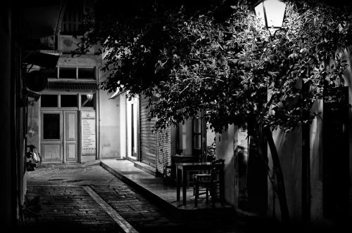

Fotografía Artística
La artística es un tipo de fotografía que no resulta fácil de definir. Sin entrar en los conceptos del arte, una fotografía se considera artística cuando el autor crea su obra con el fin de transmitir un sentimiento o una sensación.
En este tipo de imágenes, la intencionalidad del fotógrafo profesional cobra vital importancia. Su humor, sus sentimientos, sus deseos, sus pensamientos y sus intenciones se hacen protagonistas de la imagen mucho más allá de la representación física que queda plasmada en la foto.
Una foto artística no sale por casualidad. Se necesita un cierto dominio de la técnica fotográfica, capacidad de observación, reflexionar sobre el concepto que se quiere transmitir... y ese "no sé qué" para hacer algo especial. Y suerte, porque no siempre sale. Y capacidad de reacción, porque, a veces, el resultado final es distinto al proyectado. Pero un artista sabe estar ahí y adaptarse.
Categorías artísticas
la fotografía conceptual merece una mención aparte. Se trata de un estilo que pretende transmitir a la mente del espectador un concepto o idea a través de una imagen. Es un tipo de fotografía altamente artística que requiere intención y planificación. La diferencia o matíz es que lo importante es el mensaje y que se capte de forma inmediata.
La fotografía creativa demuestra que la mayoría de las imágenes pueden categorizarse de varias maneras, sobre todo en lo que a fotografía artística se refiere. La subjetividad es la principal característica de este tipo de fotos. No basta con que sean fotos chulas; deben transmitir sensaciones o emociones.
Fotografía Publicitaria
La fotografía publicitaria nace con el fin de anunciar, dar a conocer y vender un producto. En principio su única intención era mostrar lo que el anunciante quería vender, hacer saber a la gente que el producto existía y conseguir que acabase comprando. Sigue teniendo esos mismos objetivos, pero, con el tiempo y la competencia, ha ido transformándose en la baza más importante de las campañas de publicidad y, a veces, en todo un arte.
A diferencia de otros géneros fotográficos, la calidad de una imagen publicitaria se puede medir, y se mide, de una forma muy sencilla: si aumentan las ventas, es buena; si no… cambiamos de publicista. En definitiva, su calidad artística y su dificultad técnica importan, naturalmente, pero solo si ayudan a incrementar la cuenta de resultados del cliente y/o el prestigio de la marca.
Características y técnicas de la fotografía publicitaria
1. Atraer la atención: Conseguir una imagen que capte la mirada del público. Hacerla llamativa de un modo en el que no pase desapercibida para el cliente potencial y pueda ser recordada en el futuro.
2. Transmitir una idea concreta: El anunciante tiene una idea que ha de ser plasmada en la foto; si esto no se consigue o se provoca el efecto contrario puede tener consecuencias nefastas.
3. Animar a la compra: Empujar al cliente a comprar el producto. Una vez captada su atención y transmitida la idea del anunciante el destino final de la foto comercial debe ser estimular la compra.
Además de todo esto, dar una buena imagen resulta primordial, por lo que se ha de tener cuidado con el mensaje transmitido o la fotografía en sí misma. Más que representar una realidad, la fotografía publicitaria debe crear escenas que, de algún modo, resulten apetecibles, a menudo apelando a los sentimientos del cliente potencial más que a la propia descripción del producto.
Fotografía de Moda
La fotografía de moda nos inunda cada día desde la prensa, las revistas, marquesinas y escaparates. Como buena fotografía publicitaria cumple con las mismas características básicas y los mismos propósitos. Esto es: llamar la atención del público, quedarse en su recuerdo y sobretodo incitar a la compra del artículo fotografiado, en este caso, de moda.
En el caso de la fotografía de moda, estos artículos no sólo harán referencia a piezas de ropa sino también a sus complementos, accesorios, maquillajes y cosméticos. Vestidos, camisas, bolsos, relojes, etc. son los protagonistas de estas imágenes junto con los modelos que los lucen.
En muchos de los casos, no sólo se vende la prenda de ropa en sí, sino que también el o la modelo, y la fotografía en sí misma, se convierten en un producto que se puede comercializar. Aunque el fin último de la foto de moda sea comercial, también necesita demostrar un dominio de la técnica y una creatividad que hacen de ella un género realmente difícil de dominar.
Elementos en la fotografía
No sólo la originalidad y la inventiva vende productos y deben ser características fundamentales del fotógrafo de moda. El control absoluto de la puesta en escena y la iluminación diferenciarán a un profesional de otro.
La iluminación será uno de los factores fundamentales no sólo porque imprima el carácter de la foto con sus luces y sombras sino porque nos permitirá realzar volúmenes de las prendas, marcar o disimular texturas de los tejidos, suavizar o resaltar colores, etc.
Fotografía Documental
La fotografía documental pretende representar fielmente y congelar un fragmento o momento de la realidad. Se centra en las personas y en los grupos sociales para mostrar aspectos de su vida cotidiana.
Se puede definir la fotografía documental de muchas maneras. Una definición muy extendida y aceptada dice que "una foto documental nace con la intención de plasmar la realidad en una imagen fija".
Podría entenderse que todos los tipos de fotografía son documentales, ya que muestran algo que está ocurriendo delante de la cámara, en su sentido más estricto. Sin embargo, este tipo de foto sólo hace referencia a las imágenes que muestran evidencias de que un evento o situación realmente ocurren, y que sería así, aunque no hubiese estado allí el fotógrafo para documentarlo. Por tanto, las fotos no se deberían manipulan con Photoshop ni programas similares.
Más que informar, a menudo este estilo de fotos pretende llamar la atención o concienciar a la sociedad sobre algún tema, evento, personaje, grupo social o condiciones de vida. O tiene un sentido de protesta. En todo caso, suele ser un formato de imagen muy expresivo, a veces crudo, que no necesita explicación.
Los eventos son registrados por la cámara del fotógrafo de la manera más objetiva posible, aunque, a veces, el encuadre y la composición pueden alterar o matizar algún aspecto importante de la escena. Cuando la imagen se manipula de forma intencionada, no se considera fotografía documental, sino amarillismo. La siguiente imagen muestra un ejemplo de manipulación del encuadre.
Fotografía documental y fotoperiodismo
Existen varios tipos de fotografía documental. Se diferencian, sobre todo, en el destino que van a tener las imágenes. Algunas son solo creaciones artísticas (que no es poco), otras tienen una intención de denuncia o reivindicación. Hay fotos hechas expresamente para archivos o fondos documentales, sobre una temática concreta, y otras que forman reportajes para su difusión inmediata.
Las fotos documentales a menudo se confunden con otros tipos de fotografía, como la fotografía de prensa o periodística, debido a que el destino final de muchas de las imágenes documentales acaba siendo la publicación en periódicos. Pero no son lo mismo. Mientras que la fotografía documental tiene como requisito ser objetiva, la fotografía publicada en prensa (fotoperiodismo) no tiene porqué serlo y, de hecho, normalmente no lo es.
La fotografía documental va más allá del fotoperiodismo, sobre todo, en cuanto a profundidad, ya que retrata la forma de vida y la situación social de una persona o un grupo determinado. No se queda sólo en la noticia, sino que busca plasmar en imágenes las causas y las consecuencias de lo que ocurre.
Fotografía Retrato
Dentro de los distintos tipos de fotografía, el retrato fotográfico busca captar la esencia, la apariencia y los rasgos más característicos de la persona fotografiada. La fotografía de retrato surge casi a la vez que la invención de las cámaras, siendo un método muy accesible y barato para plasmar la imagen de una persona, como ya se hizo con la pintura de retrato. Existen variantes dentro de la fotografía de retrato donde pueden cambiar los planos (plano detalle, plano medio, primer plano, primerísimo primer plano…) y la luz (luz frontal, luz lateral, luz de relleno, luz de fondo…)
La fotografía de retrato es la modalidad fotográfica que se encarga de capturar la esencia de una persona ya sea destacando la mirada, la pose o sus cualidades físicas en general y transmitir su estado de ánimo u otro tipo de sensaciones. También se utiliza para contextualizar a alguien en un escenario concreto o explicar un suceso a través de las personas a las que afecta.
Aunque normalmente relacionamos la fotografía de retrato a una foto de la cara en primer plano, esta modalidad también recoge fotografías de cuerpo entero o incluso con el modelo o la modelo de espaldas a la cámara.

Consejos para fotografía de retrato
La exposición correcta: Si encontrar la exposición correcta es ya de por sí importante en cualquier tipo de fotografía (siempre que tus fines creativos necesiten una «exposición correcta»), en fotografía de retrato cobra especial importancia medir bien la luz que hay disponible.
En un retrato cerrado en el que la cara ocupa casi por completo el encuadre, la textura de la piel es una de las protagonistas principales y si exponemos más tiempo de lo necesario la piel saldrá sobreexpuesta, destrozando la textura de la frente, pómulos, labios, etc.
Intenta medir la exposición sobre las zonas donde la luz se refleje directamente, en las luces más altas y guíate por el histograma de tu cámara, así te asegurarás de que tanto las zonas claras como las más oscuras tienen información y no se han dañado por una mala exposición.
Retratos en exteriores: Es importante cuando hagas retratos en exteriores elegir bien la hora del día o llevar material para «suavizar» la luz. Los mejores momentos para hacer retratos en exterior son los cercanos a la puesta y salida del sol, cuando la luz es mucho más suave que en otras horas intermedias del día.
Recuerda que si la luz es muy dura corres el riesgo de perder detalle en las texturas, las sombras aparecerán muy exageradas (sobretodo en la zona de los ojos) dando lugar a una imagen con fuertes contrastes, por no hablar de la cara de nuestro modelo intentando salir bien, sin gafas y con un sol espléndido.
Utiliza reflectores de luz como este para iluminar la parte en sombra o difusores para suavizar la luz y hacerla más homogénea.
Fotografía Aérea
La fotografía aérea es la rama de la fotografía en la que el papel del fotógrafo poco a poco se va perdiendo debido a las nuevas tecnologías. Lo habitual es que, en las fotos tomadas desde el aire, se empleen cámaras que realizan las tomas o bien automáticamente o a control remoto. Aunque, por supuesto, en los orígenes de este tipo de fotos, los fotógrafos tomaban sus imágenes ellos mismos subidos a algún medio de transporte capaz de volar.
Con la llegada de los drones, esos pequeños aviones teledirigidos en los que se puede instalar una cámara, la fotografía aérea ha ido creciendo y llegando a lugares cada vez más recónditos con mucha más facilidad y aumentando los campos en los que la fotografía aérea es usada.
Las fotos tomadas desde el aire nos sitúan geográficamente y, con frecuencia, nos permiten observar el mundo que nos rodea de un modo poco habitual. Tradicionalmente se ha utilizado en cartografía y geología para estudiar los accidentes geográficos o en arqueología, con la que hemos podido ver a vista de pájaro impresionantes construcciones. La vigilancia y el reconocimiento militar ha sido otra de las funciones tradicionales de la fotografía aérea.
Las fotografías desde el aire van, lógicamente, ligadas a un dispositivo capaz de volar. Pueden realizarse desde aviones, avionetas, globos, helicópteros, paramotores, parapentes, etc.
Si nos dedicamos a este tipo de fotografía como aficionados podemos tomar nuestras imágenes desde aviones comerciales. Será importante colocarse en el lado contrario al sol y delante de las alas para que estas no entorpezcan la visión. Las mejores imágenes se obtienen poco después del despegue del avión o poco antes del aterrizaje.
Fotografía orbital
En este tipo de fotos las cámaras están montadas en satélites que orbitan alrededor de la tierra. Algunos de estos satélites están provistos de potentes teleobjetivos que producen imágenes de alta definición y con inmensas resoluciones con los que pueden observarse detalles realmente asombrosos.
La fotografía orbital ha sido utilizada en sus orígenes con fines militares, de espionaje y sobretodo meteorológicos. La fotografía aérea puede ser vertical, si el plano de la tierra está totalmente paralelo al plano de la imagen, o puede ser oblicua, si la imagen ha sido tomada con cierta perspectiva.
Fotografía Nocturna
La fotografía nocturna es una rama de la fotografía que, como su nombre indica, toma las imágenes cuando llega la noche. Como sabemos, la fotografía es luz y, en principio, parece que la noche nos puede significar la ausencia de luz; pero nada más lejos de la realidad.
Con la llegada de la noche las luces de las ciudades se encienden. Los faros de los coches, los escaparates, las marquesinas, los neones, las estrellas y la luna. Todo ilumina el entorno y el paisaje y la fotografía nocturna se encarga de retratarlo lo mejor posible.
Las condiciones de luz determinarán qué técnicas y qué accesorios serán necesarias para la fotografía. Para sacar fotos por la noche, hay un accesorio que se hace imprescindible: el trípode. Al tener poca iluminación, necesitaremos abrir el diafragma y aumentar la velocidad de obturación por lo que las fotos saldrán, con total seguridad, movidas o trepidadas si no usamos un trípode.
A pesar de que usemos trípode y la cámara se mantenga estable, los elementos móviles de la escena que tengamos delante saldrán movidos en la foto. Sólo los elementos fijos de la situación que retratemos no saldrán borrosos.
Es por esto que al fotografiar por la noche una calle, por ejemplo, todos los objetos que la componen, edificios, farolas, semáforos, etc. saldrán nítidos en la imagen salvo aquellos que estén en movimiento como gente andando, árboles si hay viento o coches. A esto se deben las estelas que dejan los vehículos en algunas fotografías nocturnas.
Pintar con luz
Para tomar este tipo de fotografías es necesario que la cámara realice una exposición larga, tanto como nos dé tiempo a pintar con luz lo que queramos.
Para ello lo más habitual es utilizar el modo Bulb de nuestra cámara y tener el obturador abierto el mayor tiempo posible. Lo más común es usar linternas para dibujar con la luz pero podemos usar cualquier tipo de fuente luminosa, leds, velas, fuego o bengalas darán resultados espectaculares.
Otra de las técnicas más utilizadas en fotografía nocturna es el conocido como Bokeh. El bokeh es un término que significa desenfoque y que según cómo sea nos determinará la calidad del objetivo que usemos. En el caso de la fotografía nocturna, este desenfoque se produce en los puntos de luz provocando imágenes con un encanto especial.
Fotografía Submarina
La fotografía subacuática además de divertida, resulta fascinante. Las fotos que tomamos bajo el agua nos enseñan un mundo del que normalmente no disfrutamos y que puede ser asombroso. Hacer fotos bajo el agua no resulta técnicamente fácil y necesitamos un equipo especial que nos permita tomar las fotografías sin dañar nuestra cámara.
Equipo necesario
1. Cámara sumergible: Lo primero que necesitaremos es una cámara que sea capaz de sumergirse en el agua y funcionar sin sufrir daños. Estas cámaras están perfectamente selladas por lo que el agua no podrá entrar al interior de su mecanismo y estropearlo. En el mercado existen multitud de modelos y, sobretodo, multitud de calidades y precios.
2. Carcasa estanca: Si quieres usar tu cámara de fotos y ésta no es sumergible puedes conseguir una carcasa en la que no le entre absolutamente nada de agua y puedas manejar todos los controles. Como en el resto de productos, hay infinidad de calidades y de opciones. Desde las más baratas para aficionados que no se sumerjan a grandes profundidades, hasta las carcasas profesionales que soportan la presión del agua a muchos más metros de profundidad.
3. Equipo de iluminación: Debajo del agua la luz cobra una importancia igual o superior a la que tiene fuera de ella. Los rayos de luz van siendo absorbidos y se van dispersando a medida que la profundidad aumenta por lo que necesitaremos una fuente de luz externa.
4. Objetivos: Debido a las condiciones de luz que tenemos bajo el agua conviene utilizar la lente más luminosa que podamos. Antes de utilizar todo el equipo conviene probarlo convenientemente, tanto la cámara como la carcasa y los flashes. Debemos acostumbrarnos a su uso, que será sensiblemente diferente al que le demos fuera del agua. Además, el medio acuático no nos permitirá entretenernos demasiado por lo que, cuanto más dominio del equipo y más acostumbrados estemos a manejarlo, mejores resultados podremos obtener.
Como norma general, las fotografías bajo el agua serán mejores cuanto más cerca estemos del sujeto. Esto es debido a la falta de luz y a que, cuanto más nos acerquemos, tendremos colores más vivos en las fotos. Recordemos que a partir de 10 metros de profundidad, aproximadamente, los colores se van perdiendo. El color rojo será el primero en desaparecer.
Fotografía Astronómica
La fotografía astronómica es un área especializada de la fotografía que toma imágenes de astros, objetos en el espacio y retrata grandes extensiones de cielo. La astrofotografía es llamada así siempre y cuando su principal protagonista sea el cielo y sus objetos, tanto si las fotografías han sido tomadas por la noche con una cámara corriente como con un sofisticado telescopio.
El principal problema de la fotografía astronómica radica en que el sujeto nunca está quieto. A medida que la tierra gira sobre su eje el campo de visión de una cámara o de un telescopio fijo barre el firmamento.
Las estrellas dejan un rastro luminoso cuya longitud es proporcional al tiempo de exposición. Si se utiliza una cámara réflex con un objetivo normal, aparecerán imágenes alargadas de las estrellas a cualquier exposición que esté por encima de los 20 segundos. Con exposiciones más largas se consigue el efecto conocido como star trails, trazos estelares o rotación estelar, muy popular entre los aficionados a la astrofotografía.
Para evitar estos rastros existen monturas especiales que permiten el seguimiento de los astros para que estos aparezcan fijos en nuestras fotos. Estas monturas hacen lo que se llama una alineación polar y pueden ser de dos tipos, acimutales y ecuatoriales. Las más comunes en fotografía astronómica son las monturas ecuatoriales.
La alineación polar consigue que podamos seguir a las estrellas en su trayectoria para que no dejen rastro en nuestras fotografías con largas exposiciones.
En el ámbito de la ciencia, la fotografía ha desempeñado un papel muy importante. Al tomar una fotografía con telescopio, los astrónomos obtienen imágenes exactas de la situación y brillo de los cuerpos celestes. Si comparamos fotografías de la misma zona del cielo tomadas en diferentes momentos se pueden detectar los movimientos de ciertos cuerpos celestes, cómo los cometas.
Consejos para una buena fotografía astronómica
Las mejores fotografías de estrellas y nebulosas se lograrán en noches frías y claras, se debe prestar atención a la formación de rocío en el objetivo. Para fotografiar la luna y los planetas más cercanos suele ser preferible un cielo neblinoso ya que la turbulencia atmosférica es generalmente menor. La altura del horizonte deberá ser lo mayor posible. Lo mejor es disparar desde un punto alto y alejado de las luces.
Para fotografiar constelaciones, planetas y cometas sólo es necesario una cámara y un trípode. Con ellos se puede fotografiar el cielo visible desde una latitud determinada. Una montura ecuatorial y una exposición de unos 30 min, revelará multitud de estrellas invisibles al ojo desnudo. Hay mapas astrales que aparecen en publicaciones especializadas y que nos informarán sobre lo que se puede fotografiar en cada mes.